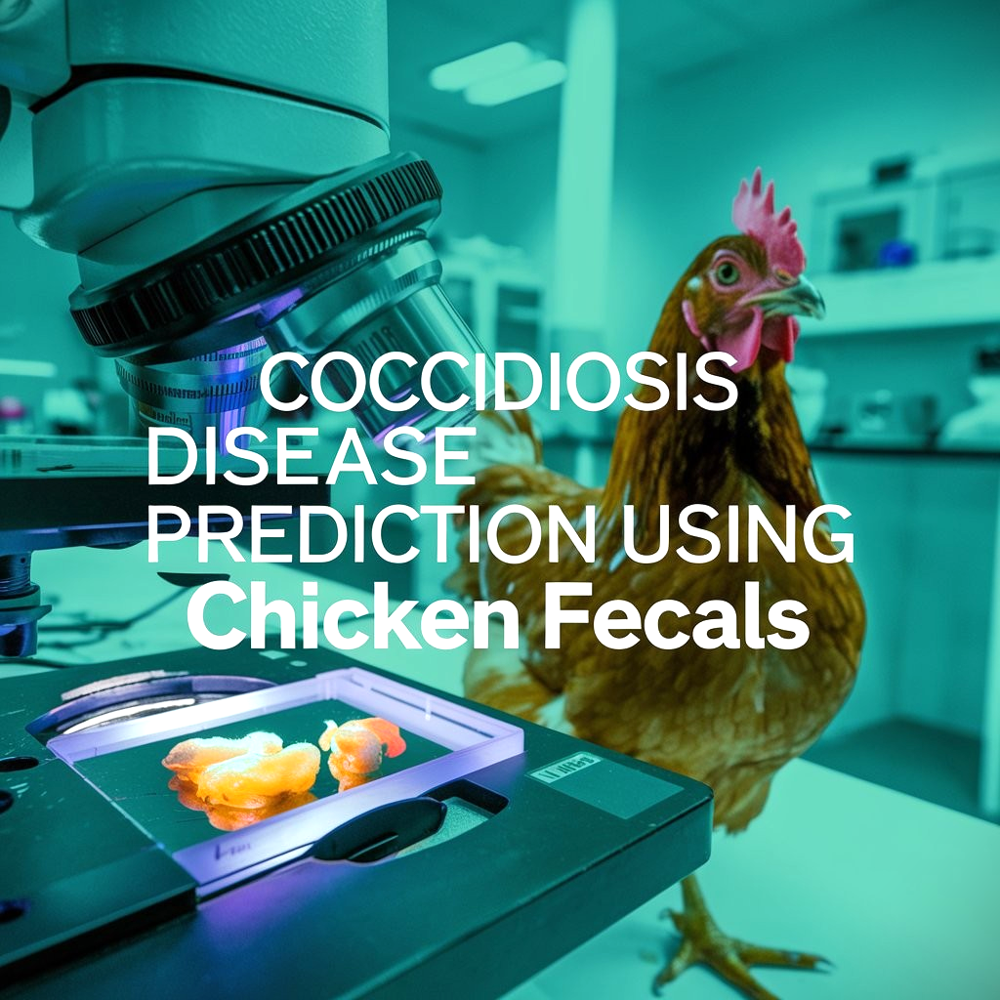
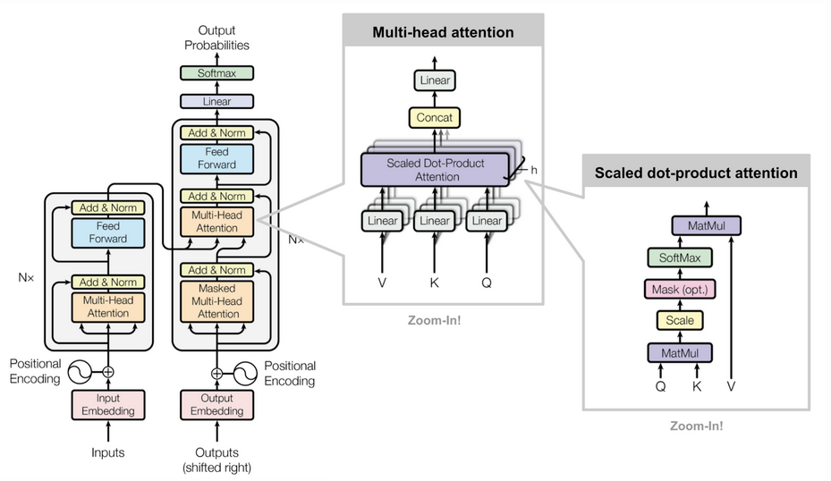
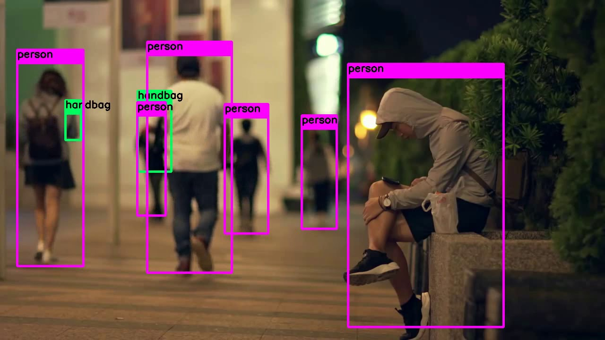
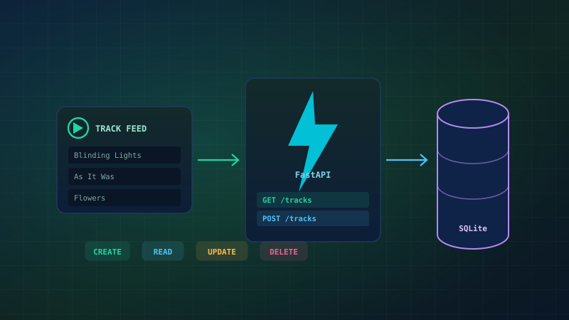
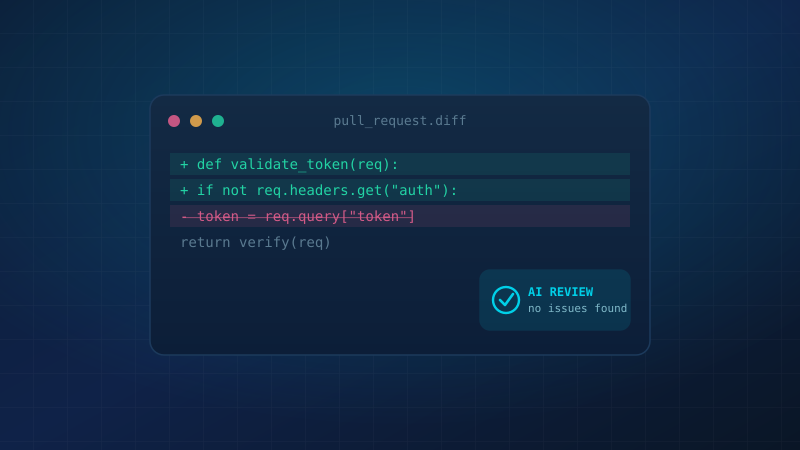
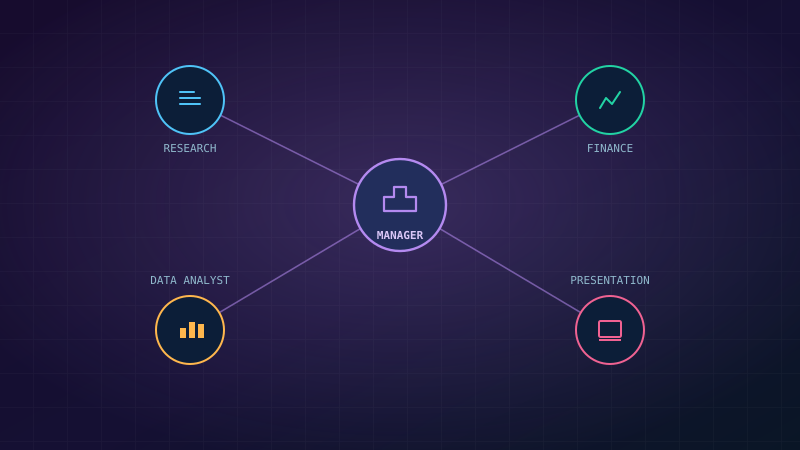
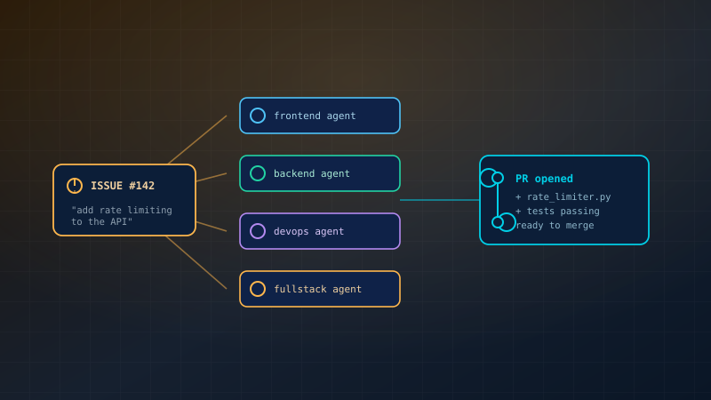
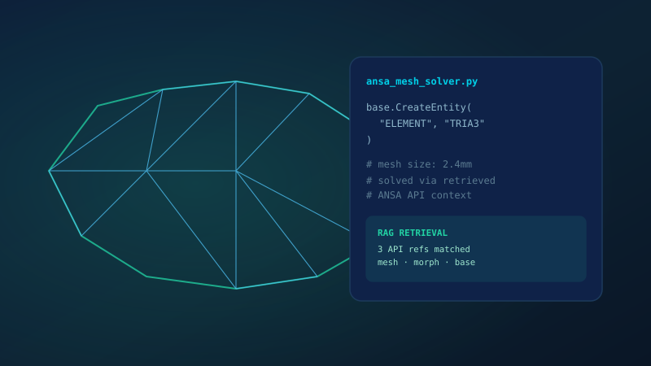
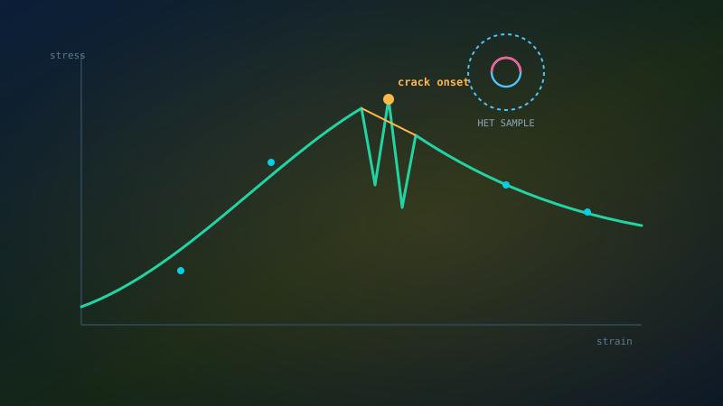
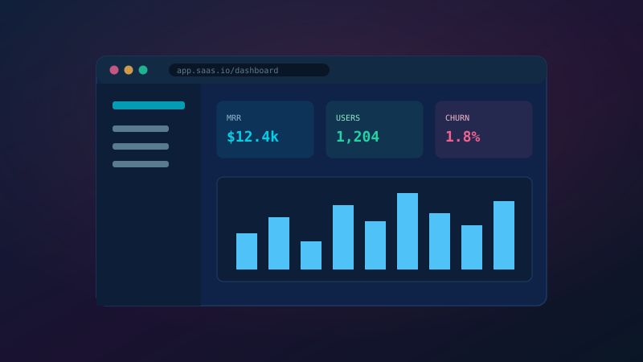

Muhammad
Farhan
Who I Am
I am an AI and Automation Engineer working with SOCO ENGINEERS, where I sit at the intersection of Mechanical Engineering and Machine Learning. My work spans computational CAE automation, data-driven simulation pipelines, and intelligent robotics.
I developed a RoboGlove for stroke rehabilitation, built end-to-end preprocessing & postprocessing automation for BMW Group simulation workflows, and am currently advancing FEA process automation using Graph Neural Networks (GNN).
Research & Engineering InterestsWork Experience
- Automating BMW Group simulation preprocessing & postprocessing workflows using Python and CAE APIs.
- Advancing FEA process automation using Graph Neural Networks (GNN) for structural analysis.
- Building intelligent data pipelines connecting HPC simulation outputs to ML training datasets.
- Developed RoboGlove — a wearable robotic device for stroke patient motor rehabilitation.
- Integrated sensor arrays with embedded control systems for real-time haptic feedback.
- Applied ML algorithms for engineering data analysis and predictive modelling tasks.
Featured Projects










Technical Skills
OptiStruct · HyperMesh
FEA Preprocessing
Mesh Automation
Result Postprocessing
Surrogate Modeling
Neural Networks (ANN)
SVM · Regression
Scikit-learn · XGBoost
Transformers
Vision Language Models
YOLO / Detection
Transfer Learning
C++ · Bash
FastAPI · SQLite
CI/CD Pipelines
Data Engineering
Sensor Integration
Embedded Systems
Control Systems
Motor Rehabilitation
Parallel Computing
Solver Integration
Post-Processing Systems
Scalable Pipelines
Education
Get In Touch
Let's work together.
Whether you're looking to automate CAE workflows, integrate AI into simulation pipelines, or collaborate on a research project — I'd love to hear from you.
farhanzafrani@gmail.com
Based in Munich, Germany & Multan, Pakistan.
Open to remote collaboration worldwide.